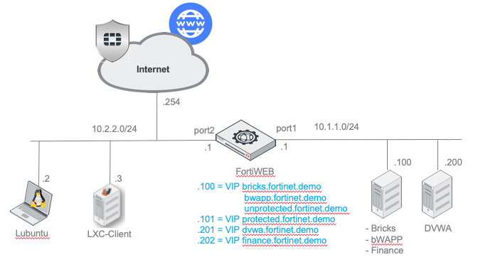

FortiWeb - Machine Learning
This workshop can be used for demo purposes of FortiWeb Machine Learning, or practice by configuring, exploring and testing the available features. It is intended to get you familiar with Machine Learning offered web application protection.
The workshop covers the following topics:
- Demo : Machine Learning - Bot Detection (malicious client detection demo)
- Demo : Machine Learning - Anomaly Detection (input validation demo)
- Lab : Machine Learning - Anomaly Detection (configure and operational management)
In case you need help you can reach out to https://docs.fortinet.com/product/fortiweb
Environment
The environment is using an partially preconfigured FortiWeb.
Before you start the exercises you have to perform the manual preparation to configure the Lubuntu client.
Login Details
| Device | Username | Password |
|---|---|---|
| FortiWeb | admin | fortinet |
| DVWA | admin | password |
| bWAPP | admin | password |
Topology
During the workshop we will use the environment as outlined below. All devices are deployed with a basic network setup, and should be reachable.

Disclaimer
Nothing contained in this article is intended to teach or encourage the use of security tools or methodologies for illegal or unethical purposes. Always act in a responsible manner. Make sure you have written permission from the proper individuals before you use any of the tools or techniques described here outside this environment.